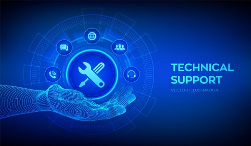
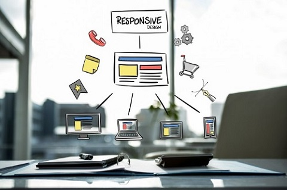

01/01/2021
Reparación de PC
Contamos un servicio integral de reparación de PC que está presente en los distintos pasos para que su empresa se olvide de los problemas de sus computadoras y se concentre en lo mas importante, hacer crecer su negocio. Mantenimiento
de PC a través de abonos mensuales para empresas. Realizamos el mantenimiento de PC a empresas donde se realizan tareas de mantenimiento preventivo y visitas por eventos con un valor mensual. El trabajo que llevamos adelante está
pensado para prevenir que los equipos fallen y así evitar tiempo perdidos en su empresa. Diseñamos un modelo de visitas mensuales que se adaptan a las necesidades de cada uno de nuestros clientes.
01/01/2021
Redes
En Hon@ki realizamos la instalación de cableado estructurado de datos respetando las normas de construcción internacionales más exigentes. Trabajamos junto a sus arquitectos para encontrar la mejor forma de realizar el cableado para
que además de la funcionalidad prime la estética y buen orden en las redes informáticas de su empresa. Brindamos servicios de diagnóstico, diseño, reparación, conectividad, integración y elaboración de presupuestos en cualquier
proyecto de transmisión. Nuestros técnicos reciclan sus conocimientos a través de un permanente programa de formación, de este modo Hon@ki garantiza el aprovechamiento del 100% de la red con las últimas tecnologías.

01/01/2021
Soporte Técnico
Solucionamos de manera remota las principales problemáticas que presenten las terminales de tu negocio, optimizando el tiempo de resolución y evitando así la baja en la productividad de la estación de trabajo afectada. Si vivís muy
lejos, no tenés tiempo de recibir a un técnico, y no querés moverte de tu casa, te brindamos una solución a tu medida: Nos comentas qué necesitas y coordinamos un día y horario para una cita ONLINE. Instrucciones simples: Se descarga
un programa de instalación fácil y rápida. Es rápido, una vez que tomamos control remoto de su PC/Notebook, empezamos a resolver su problema. No debe trasportar su PC/Notebook a ningún lado. No tiene que hacer ingresar a su vivienda/oficina
a nadie. No necesita dar datos privados. No tiene riesgo de que le cambien piezas (memorias, discos, etc.) por otros.

01/01/2021
Diseño de páginas web
Los sitios que realizamos son compatibles para todos los navegadores y todas las plataformas. Tus paginas web se verán de manera correcta, con un diseño único y se adaptará a la plataforma en la que se visualice ya sea un smartphone,
tablet, ultrabook, etc. La estructura y la programación de los sitios web que realizamos contempla una correcta distribución y utilización de código específico para lograr un óptimo posicionamiento en los más reconocidos buscadores
( google, yahoo, bing, etc ) y la implementación de un diseño responsive.